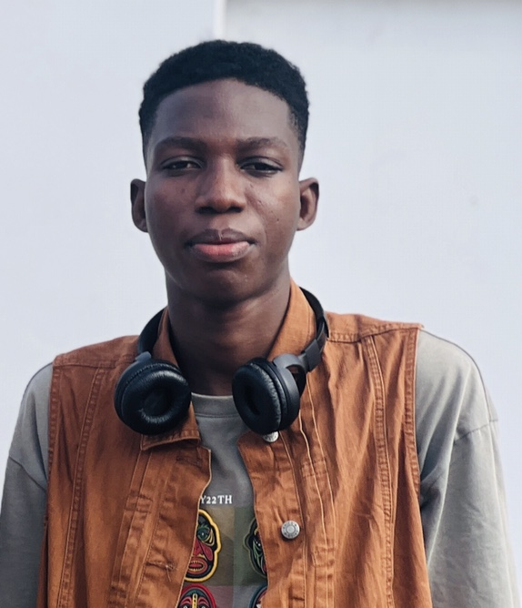
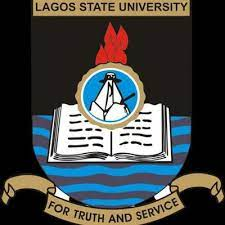

LawaL FawaZ Ayomide
Dept: Computer Science Education
Student: 100 Level

Dept: Computer Science Education
Student: 100 Level
MATRIC: 220115095
LAWAL FAWAZ AYOMIDE
EDT 122

As a student, I am a fearless and determined learner. I thrive on challenges, never shying away from complex subjects or demanding projects. My tenacity and bold approach to education push me to explore the depths of knowledge and confront intellectual hurdles head-on. I actively seek opportunities to engage in discussions, share my perspectives, and question the status quo. With an unyielding spirit, I am always ready to lead, inspire, and drive positive change in both my academic pursuits and the broader learning community. My boldness in pursuing my educational goals makes me a student who fearlessly embraces the opportunities and challenges of the academic world.
And one more thing sir i don't have any team sir
About me
fawaz@copyright